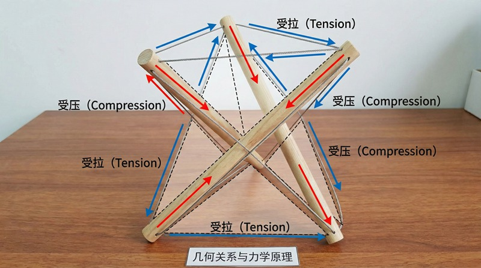
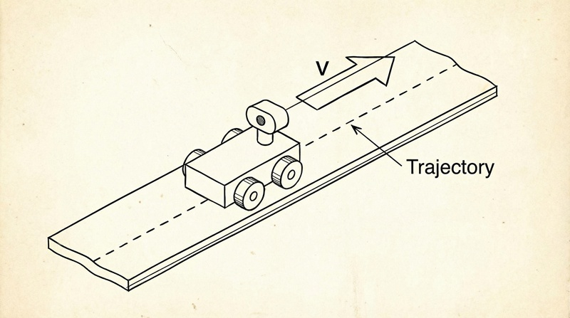

返回课程列表
第五课
能量方法
电池续航与能量回收的效率优化
⏱️ 约40分钟
电池是移动设备的生命线。如何延长续航、提高充电效率、回收制动能量——这些都是能量管理的核心问题。
电池的能量密度与续航
电池的能量密度决定了设备的续航时间。锂电池能量密度约250Wh/kg，是铅酸电池的5倍。但距离汽油的12000Wh/kg还有巨大差距。

极客项目的电池选择
不同电池的能量特性：
- 18650锂电池：单节3.7V/3000mAh，约11Wh，DIY项目最常用
- 锂聚合物电池：形状灵活，无人机和可穿戴设备首选
- 磷酸铁锂：安全性高，循环寿命长，电动车和储能系统使用
- 续航计算：电池容量(Wh)/平均功率(W)=续航时间(h)
能量回收技术
制动能量回收将动能转化为电能储存，提高整体能量效率。电动车的再生制动可以回收约30%的制动能量。

能量回收的应用
极客项目中的能量回收：
- 再生制动：电动滑板车下坡时电机反转发电，延长续航
- 太阳能充电：便携太阳能板为设备充电，户外项目必备
- 压电发电：利用振动产生电能，可为低功耗传感器供电
- 热电回收：温差发电片将废热转化为电能，效率约5-8%